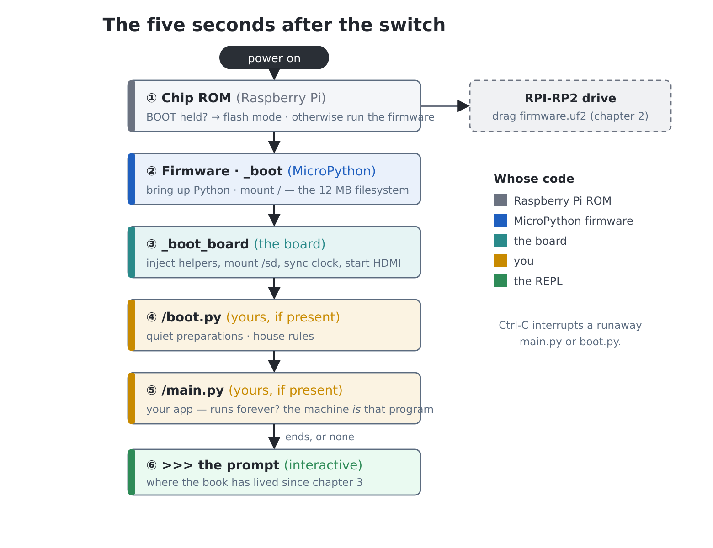
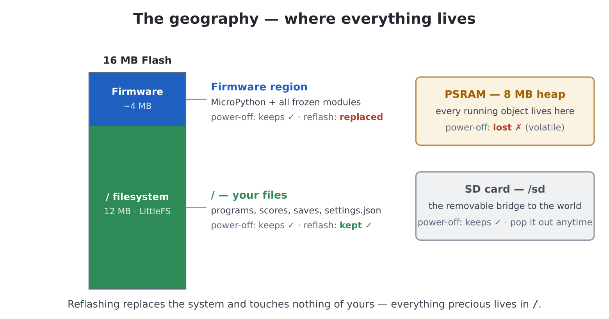

The last chapter zooms all the way out. You know the language, the screen, the sounds, the games, the gadgets; what remains is to own the machine — to know exactly what happens when the power arrives, where everything lives, how to keep your work safe, how to verify and update the system underneath you, and where the road leads when this book runs out of pages. Which it is about to.
Power arrives. What happens, in order — and, more usefully, whose code each stage is:
The chip’s ROM (Raspberry Pi’s, unchangeable) checks whether BOOT is held with the Prog port connected — chapter 2’s flashing ritual, explained at last: that UF2 drive is the ROM talking. Otherwise it starts the firmware.
The firmware (the UF2 you flashed) brings up
MicroPython and runs its frozen _boot, which mounts the 12
MB flash filesystem at /.
The board’s boot hook (_boot_board,
frozen) does everything you have been enjoying since chapter 2: injects
the helpers (ls, beep, Turtle,
the colours…) into the main program’s namespace — which the prompt
shares and run() copies to every program, though an
imported module never sees it (chapter 20’s rule) — mounts the SD card
and starts its hot-swap watcher, syncs the clock from the DS3231 (and
NTP, if chapter 30’s auto(True) is set), starts the HDMI
scanout on core 1, and attaches the on-screen console.
/boot.py — yours, if it
exists: quiet preparations before any program. House rules live
here:
# /boot.py -- every start-up, before main.py
# clock offset ready before any clock program
tz(1)
volume(60) # house rules/main.py — yours: the
appliance switch (chapter 5). If it runs forever, the machine
is that program.
Failing a main.py, or after it ends: the
>>> prompt.

And the escape ladder, one rung per failure: Ctrl-C
interrupts a runaway main.py or
boot.py; a wrecked screen still leaves the USB-C
serial console (chapter 2’s lifeline); and the nuclear option —
reflashing the firmware — is gentler than it sounds, as the next section
explains.
Where everything actually lives — worth one table on the wall:
| Place | What | Survives power-off? | Survives reflash? |
|---|---|---|---|
| Firmware region | MicroPython + all frozen modules (.frozen) |
yes | replaced |
/ (12 MB, LittleFS) |
your files: programs, scores, saves,
settings.json |
yes | yes |
/sd |
the removable bridge to the world | yes | yes |
| PSRAM heap | every running object | no | no |

Two sentences from that table govern machine ownership.
Reflashing replaces the system and touches nothing of
yours — firmware updates are safe, routine, and chapter 2’s
drill forever. And everything precious lives in
/ — which makes backup a one-word question:
where’s the copy?
/settings.json deserves its minute: it holds the
keyboard layout, screen mode and clock, the RGB1024 palette, and chapter
30’s Wi-Fi credentials, timezone and auto-sync flag — updated
automatically by keymap(), screen(),
palette(), wifi(), tz(),
auto(). It’s JSON (chapter 30 taught you to read it:
cat("/settings.json")), rm it for factory
defaults, and remember the manual’s honesty: the Wi-Fi password inside
is plain text.
The SD card is the bridge (this machine deliberately never appears as
a drive on a PC — chapter 2), so backup is a program, and after
thirty-three chapters it is four lines of review.
edit("backup.py"):
# backup.py -- every .py on the flash, to a dated folder on the SD
# card.
import os
y, mo, d = gettime()[:3]
dest = f"/sd/backup-{y:04}-{mo:02}-{d:02}"
try:
os.mkdir(dest)
except OSError:
# already there today -- refresh it
pass
count = 0
for name in os.listdir("/"):
if name.endswith(".py"):
with open("/" + name) as src:
data = src.read()
with open(dest + "/" + name, "w") as out:
out.write(data)
count += 1
print(f"backed up {count} programs to {dest}")Run it weekly (or wire it to chapter 29’s cron-junior and never think
about it again). For single files in a hurry, chapter 5’s
xsend and fm’s multi-select (Space, Space,
Space, C) remain the manual routes. The test of any
backup habit is blunt: if the flash died tonight, what would
tomorrow cost you? Make the answer “ten minutes.”
The firmware source ships an on-device test suite for everything
board-specific — the same one that guarded this machine’s own
development. Copy the repository’s tests/ folder onto the
SD card, then:
cd("/sd/tests")
run("test_all.py")The automatic suites run first — they verify drawing by reading
pixels back from the framebuffers, routing their chatter to the
serial port meanwhile — then the interactive suites ask for a human
(press this, listen to that, watch the screen). Run it after every
firmware update: two minutes, and “the update didn’t break anything”
becomes a fact rather than a hope. (Set WATCH = True in the
blit and sprite tests for the slow, showy demonstrations — the machinery
of chapters 16–18, performing.)
Everything board-specific on this machine is open source — the firmware lives in the book’s companion repository (the release page you flashed from, chapter 2, is its front door). A guided first wander:
boards/PICO_COMPUTER_3/ holds the Python you have been
using all book: pcshell.py (chapter 4’s commands — read
run() and find the real machinery behind your tracebacks),
pcturtle.py, pcsprite.py,
pcgui.py, ds3231.py (chapter 32 already sent
you here)… None of it is beyond you now; all of it is on the reading
list.DEVELOPMENT_NOTES.md, in the same folder, is the
engineering diary — every feature’s why and how,
including the dead ends. Reading other people’s engineering diaries is a
privilege; take it.hdmi.c and friends — is where chapter
35’s ladder ends: when viper isn’t enough, this is what
“write a C module” means, and MMBasic veterans will recognise the CSUB’s
grown-up sibling. The MicroPython docs’ “extending in C” pages are the
path; the port’s own C is the worked example.Coming from MMBasic: the whole arrangement will feel familiar —
settings.jsonis yourOPTIONs made visible,/main.pyisOPTION AUTORUN, the UF2 drill is identical, and the community around this board’s family (TheBackShed forum, where MMBasic and the PicoMite live) is the same one — they will recognise this machine’s surname.
Four directions from here, all open:
machine. module; you now read its idiom fluently. One
habit to form at once: read the docs at the released version
(choose it from the version selector — v1.28 as this is written),
never the /latest/ pages, which describe
unreleased features that won’t run on your firmware. The pink banner
across the top of every page is the reminder.asyncio and all;
even ulab’s dialect (chapter 31) was chosen to match the NumPy you’d
meet there.Chapter 1 promised that a machine which boots straight into a
language would teach you to think in it. Take stock of what you
built along the way: a hall of fame that survives power cuts, a turtle
that draws definitions, four arcade games with your name in the code, an
island that remembers you, a bedside clock set by atomic time, a paint
program, a weather station, a laboratory, a juggling act on one
processor core — and a toolkit (shapes,
scorelib, handy, sfx,
gpad, initials, bench) that no
one can take away, because you understand every line of it.
You are not someone who “did a Python book.” You are someone who, handed a small computer and a blank screen, knows what to do next. That was always the destination.
Switch it on. The prompt is waiting — and it’s yours.
cat("/settings.json") and account for every key in it —
which chapter set each one? Then the system report, below, as a program:
os.uname() for the firmware version,
gc.mem_free(), os.statvfs("/") for disk space
(block_size * free_blocks — slots 0 and 3). Twenty lines;
permanently useful.auto(True) (chapter 30) and time it again — the cost of a
network sync at boot, measured. Decide like an engineer, not a
maximalist.WATCH = True in
test_sprites.py and enjoy the machinery of chapter 18
showing off.pcshell.py
where run() compiles your programs with their real filename
— the feature your tracebacks have relied on since chapter 5. (It has a
comment. Some readers of this book are the reason.)/boot.py for your house: timezone,
volume, perhaps a short chime. Restraint is the discipline — everything
here runs before every program, forever.sysreport.py: firmware, free heap, flash and SD usage,
settings summary, uptime since boot (ticks_ms is your
friend), presented with chapter 15 typography. The first thing to run on
anyone else’s Pico Computer.backup.py grown
up: recurses into folders, keeps the last three dated sets (delete the
oldest — chapter 4’s tools), logs to /backup.log, and runs
from cron-junior every Sunday. Boring, bulletproof, priceless — chapter
34’s uptime discipline applied to data./boot.py, a main.py
menu (chapter 10’s challenge, full circle) of five programs you choose
for them, high-score files zeroed, a README in / written
with pye. Setting up a machine for another human is the
oldest rite in computing; perform it properly.